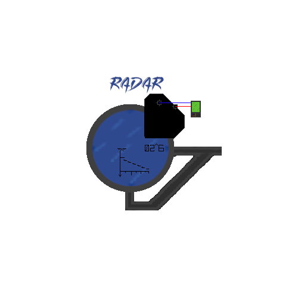

Best Played In Fullscreen(1920 x 1080) and Sound ON!
Oh No! Insectoid space invaders have blown up your fuel cargo ship. It's now up to you to retrieve fuel from the fuel cell floating in orbit.
Careful though, if one of the Insectoid ships catches you, they'll steal your fuel!
1 enemy ship is randomly chosen to be an attacker and another is randomly chosen to be a fuel station attacker, if the attacker or station attacker ship catches you, you will take damage or your cargo station will take damage.
When you've collected fuel from the cell, head back to the fuel station to store the fuel, this adds to your score. You have 60 seconds to collect as much fuel as you can!
If you save 2,500 units of fuel within 60 seconds, the attackers will be displayed on your radar and you will also get a bonus 60 seconds on your time.
If you save 10,000 units of fuel, your health will be restored. If a player can rack up 30,000 units of fuel, they will be rewarded. Good Luck and watch your HUD and Radar...
Keep any eye on your hud. If your health drops below 50%, your ship will generate an error code. If your pilot knows how to repair that code, he will perform a repair worth up to 50% of health!
But be careful, he can only make a repair once.
Use the Arrow Keys to move, fuel collection and disposal are automatic by hovering over the cell and the station. Winner is determined by how much fuel they can save.
Press Space to start or you can scroll down for the gui guide and more information.
- Hover over the floating fuel cell and your ship's forcepts will automatically collect fuel
- After you've collected fuel, head back to the fuel station to dispose of the fuel in exchange for score points.
This is your ship's Heads Up Display. It tells you where your ship is damaged, the error codes, repair lights and status lights
- If you have a green "OK" on your HUD, your ship is in working condition, red means it is severely damaged under 50% of the ship's health.
- If your ship is damaged below 50%, your [WARNING MECHANICAL FAILURE] light will come on and give you a damage location light below it. Below that is an error code.
- If your repair light "RPЯ" is turned on, your pilot has defused an error code and made a repair. Repair has the ability to repair up to 50% of the ships original health, which means you can have over 100% of the health you started with.
- Keep an eye on your overshield light "-S", if your overshield is ready, the light will turn on "+S". Press the S key to activate your overshield, you will be protected from all enemies for 10 seconds. When your shield gets low, it will turn red. You can only use your overshield once.

This is your radar. If you save 2500 units of fuel, the radar will display which enemy is an attacker and fueling station attacker.
- Radar tracking is always on however, it needs to be activated to reveal which targets are being tracked.
- On activation, the Located light will turn on and display enemies on the radar screen.
- Once the radar has been activated, it does not turn off
- When the radar is activated, attacker names will show up on the screen. If they have a + next to their name, they are a player attacker. If it is a >, they are a fuel station attacker. If only 1 enemy shows up on your radar, they are both the player attacker and the station attacker
This is the fueling station's Heads Up Display. It tells you the status of the fueling station and will also display bonus time.
- If the fueling station's health drops below 50%, the [WARNING DANGER TO FUEL SHIP] light will come one. However, the station cannot be repaired during battle.
- If you save 2500 units of fuel, the [BONUS TIME ADDED] light will turn on.
- Damage to the fueling station is done through the player. If a station attacker hits the player, the fueling station's health is affected.